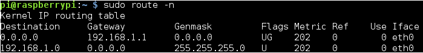

Apache modules are compiled into shared objects and are dynamically loaded when apache starts- They are at /usr/lib/apache2/modules
System binaries are located at /usr/sbin

The configuration layout for an Apache2 web server installation on Debian systems is as follows:
# /etc/apache2/
# |-- apache2.conf
# | `-- ports.conf
# |-- mods-enabled
# | |-- *.load
# | `-- *.conf
# |-- conf-enabled
# | `-- *.conf
# `-- sites-enabled
# `-- *.conf
Pi Web Server
SET A STATIC IP
ifconfig

sudo route -n

sudo nano /etc/network/interfaces

INSTALL APACHE, PHP, AND ASSOCIATED LIBRARIES
sudo apt-get install apache2
sudo apt-get install php5 libapache2-mod-php5
sudo service apache2 restart
Now remove the index.html file:
sudo rm index.html
and create the file index.php:
sudo nano index.php
and put some PHP content in it:
<?php echo "hello world"; ?>
HANDLING DYNAMIC IP
www.noip.com
forward port 80 from your router (https://www.noip.com/support/knowledgebase/port-forwarding-on-the-netgear-wgr614-v6-router/)
www.portchecktool.com
http://cosimodm.ddns.net/
To make noip automatically update the IP address everytime your isp changes your IP address, you will need to install noip’s Dynamic Update Client.
- sudo mkdir /home/pi/noip
- cd /home/pi/noip
- sudo wget http://www.no-ip.com/client/linux/noip-duc-linux.tar.gz
- sudo tar vzxf noip-duc-linux.tar.gz
- ls
cd noip-2.1.9-1”
sudo make
sudo make install
the Dynamic Update client is started by running sudo /usr/local/bin/noip2
The DUC service will now run until the Pi is shutdown.
DUC AUTOMATIC STARTUP
If you want to run the client at boot time create an init.d script file in /etc/init.d/noip2 with this content:
#! /bin/sh
### BEGIN INIT INFO
# Provides: noip2
# Required-Start: $syslog
# Required-Stop: $syslog
# Default-Start: 2 3 4 5
# Default-Stop: 0 1 6
# Short-Description: noip.com client service
### END INIT INFO
# . /lib/lsb/init-functions
case "$1" in
start)
echo "Starting noip2."
/usr/local/bin/noip2
;;
stop)
echo "Shutting down noip2."
killall noip2
#killproc /usr/local/bin/noip2
;;
*)
echo "Usage: $0 {start|stop}"
exit 1
esac
exit 0
sudo chmod +x /etc/init.d/noip2
sudo update-rc.d noip2 defaults
Now you can reboot your Raspberry Pi and it will automatically update it\u2019s ip at noip on boot.
SECURITY!!!
HARDENING SSH!!!!
Open /etc/ssh/sshd_config, find the line that says #PasswordAuthentication yes, and change it to PasswordAuthentication no. Restart the SSH server daemon to apply the change (sudo service ssh restart.)

Add PermitRootLogin no to your /etc/ssh/sshd_config

use fail2ban to prevent brute-force attempts --> http://www.fail2ban.org/wiki/index.php/Main_Page
Limiting the users that can SSH to the server. Either by group or just specific users.
Add AllowGroups group1 group2 or AllowUsers user1 user2 to limit who can SSH to the server.
Make the sshd block client IP's that have failed to supply correct login information "DenyHØsts" can do this job quite effectively. --> http://denyhosts.sourceforge.net/
This will make sure that brute force-attacks on the sshd wont be effective, but remember! this way you can end up locking your self out if you forget you password. This can be a problem on a remote server that you don't have access to.
Move the server port from 22 to another port. Either at your gateway, or on the server. It doesn't increase the security, but does mean all the random internet scanners won't clutter up you log files. --> https://en.wikipedia.org/wiki/Security_through_obscurity
Also follow these steps:
http://www.techrepublic.com/blog/10-things/10-things-you-should-do-to-secure-apache/
REFERENCES:
http://projpi.com/diy-home-projects-with-a-raspberry-pi/pi-owncloud-drop-box-clone/
http://projpi.com/diy-home-projects-with-a-raspberry-pi/pi-web-server/
http://www.noip.com/support/knowledgebase/installing-the-linux-dynamic-update-client/
INSTALLING OWNCLOUD!
https://software.opensuse.org/download/package?project=isv:ownCloud:community&package=owncloud
For Debian 8.0 run the following as root:
echo 'deb http://download.opensuse.org/repositories/isv:/ownCloud:/community/Debian_8.0/ /' >> /etc/apt/sources.list.d/owncloud.list apt-get update apt-get install owncloud
You can add the repository key to apt. Keep in mind that the owner of the key may distribute updates, packages and repositories that your system will trust (more information). To add the key, run:
wget http://download.opensuse.org/repositories/isv:ownCloud:community/Debian_8.0/Release.key apt-key add - < Release.key